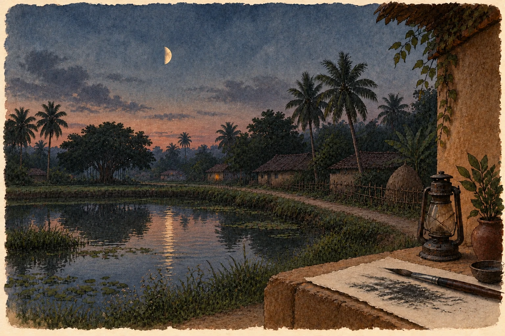

ମୂଳ କବିତା · ଓଡ଼ିଆ
ଫାଳେ ଜହ୍ନ

ନିଛାଟିଆ ଜହ୍ନ ରାତିରେ
ବହଳ ରଙ୍ଗ ଥୋକେ ନେଇ
ସେ ନାଲିନେଳି ପତ୍ର ଗଣୁଥାଏ
କବିତା ସବୁ ମିଶିଯାଏ ତୈଳଚିତ୍ରରେ
କୋଣାର୍କ ହେଇ
ଅତୀତର ଭୂଇଁ ଧସେଇ ପଶେ
କାଚ ଘର କୋଣରେ
ଶୋଇଥିବା ଲଣ୍ଠନ କେତେଟା
ଦେଖୁଥାଆନ୍ତି ଆଲୁଅର ଦିବାସ୍ବପ୍ନ
ଖୋଲା ମାଟି ଦଲାଣରେ
ଏକକାନିକିଆ ଉଆଁସୀ କନିଆଁ
ଛିଣ୍ଡା କାନିରେ ପୋଛୁଥାଏ
ବହଳ ଅଙ୍ଗାର ପରତେ
ପୃଥିବୀର ଅନ୍ୟ ଗାଆଁଟିରେ
ଜହ୍ନ ଉଇଁବା ଆଗରୁ
--------------
_ ଶକୁନ୍ତଳା ଗୁପ୍ତା
ମୂଳ ପ୍ରକାଶନ ପଢ଼ନ୍ତୁ ↗
କବିତାଗୁଡ଼ିକ ମୂଳ ଭାଷାରେ ରହିଛି। ଭାଷା ବଦଳାଇଲେ ୱେବ୍ସାଇଟ୍ର ପରିଚୟ ଓ ନିର୍ଦ୍ଦେଶ ବଦଳିବ।